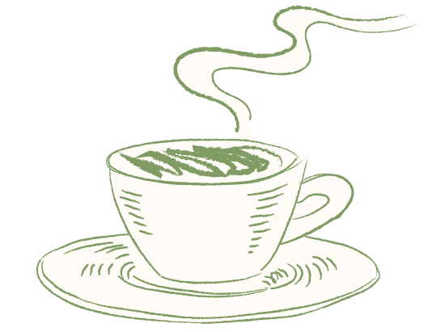

Velkommen til Café Kaf

Beliggende på hyggelige Birkegade 21 på Nørrebro, specialiserer vi os i udsøgte kager og friskbagt bagværk - med fokus på at være 100% plantebaserede!
Vi byder dig indenfor i vores stemningsfulde café, hvor du kan nyde både morgenmad og frokost. Der er altid frisklavet kaffe samt et udvalg af te og kolde drikkevarer, som du kan vælge imellem.
Uanset hvad du vælger, kan vi garantere, at du vil få en smagsoplevelse for livet!
Vi ses på Café Kaf!